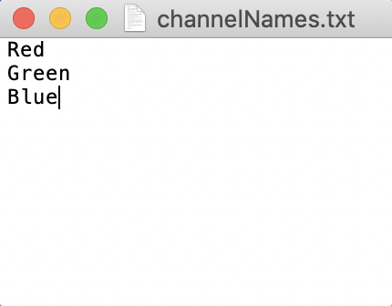

Setting Up CellSeg
This is a tutorial on how to set up and run CellSeg. This tutorial will cover:
- How to open the CellSeg program in terminal/Anaconda prompt
- How to organize your images before segmentation
- How to change parameters for segmentation in the cvconfig.py file
- Details of parameters for CellSeg
- How to run CellSeg to segment your data
This tutorial assumes you have completed the CellSeg installation tutorial here. This tutorial assumes no programming experience with Python or terminal.
Part 1: Opening the CellSeg program in Jupyter Notebook
First, we’re going to open the CellSeg program. Jupyter Notebook is a software that runs from an internet browser and provides a user-friendly way to view, edit, and run Python programs. First, in Anaconda prompt (Windows) or terminal (MacOS or Linux), navigate to the folder containing the CellSeg software as described in part 2 of the installation tutorial here, then activate your conda environment you had created for CellSeg in part 3 of the installation tutorial here by typing:
conda activate env_name
where you replace env_name with the name of your conda environment for CellSeg. To open CellSeg in Jupyter Notebook, next type:
jupyter notebook and hit enter.
Jupyter notebook should open automatically in your default browser. If it doesn’t open, copy the first URL underneath the line “Or copy and paste one of these URLs:” and paste it into your browser of choice. When Jupyter notebook opens in your browser, you should see this:

CellSeg is now set up, and we’re ready for our first run.
Part 2: How to organize your images before segmentation
For CellSeg to work properly, it requires the following folder structure for your images:
- 1. The images to segment are all in the same folder
- 2. This folder is contained in a parent folder
- 3. In the parent folder is a txt file containing the names of the image channels, one per line
An example of this structure is shown here:

Currently, CellSeg requires all images to have the same pixel dimensions in a given segmentation run. If you want to segment images of varying sizes, we recommend creating a folder for each image size, then having CellSeg segment the images in each folder one at a time (this folder structure is shown below).
CellSeg requires a txt file that contains names for each of the slices of your image (see below image). These names are usually the names of protein markers corresponding to each fluorescence channel and cycle. For RGB images, these channels are Red, Green, Blue (see below image). The txt file should be stored in the parent folder. Write down the absolute folder path to the parent folder. We’ll need it later.
Below is the expected channelNames.txt file format for RGB images.
Below is the expected channelNames.txt file format for a 4D tiff image with 2 stacks.
Part 3: How to change parameters for segmentation in the cvconfig.py file
Starting from the jupyter notebook window for CellSeg described in part 1, click on cvconfig.py to open the parameter configuration file for CellSeg. Your window should look like this:

To change values in the cvconfig.py file, delete the text to the right of the equals sign and replace it with your own text. The parameters are divided into core and advanced parameters. The core parameters are necessary for basic segmentation runs. For more customizability, users can also modify the advanced parameters. Please pay careful attention to the cases and punctuation when editing parameters as small typos will prevent CellSeg from working properly. Proper formatting for each parameter, along parameter details, are described on the cvconfig.py page at the top and in this following section.
Part 4: Details of parameters for CellSeg
File input and output parameters
These parameters point CellSeg to where your image data is located on your computer and allow you to specify the output of the CellSeg program.
target
target: (string) this is the file path to the directory containing your image folder and channels txt file.
Example on MacOS: target = “/Users/MyMac/Downloads/Images_To_segm”
Example on Windows: target = “C:/Downloads/ImageData”
output_path_name
output_path_name: this is the name of directory to save output in, contained in double quotes. If directory does not exist, CellSeg creates directory. (default value is "output")
Example on MacOS: output_path_name = “/Users/Jacob Mac/Downloads/exp12_output”
Example on MacOS: output_path_name = “output” this will create an output folder in the CellSeg program folder and save the data there
Example on Windows: output_path_name = “C:/image_segmentations/exp12_output”
image_folder_name
image_folder_name: (string) this is the name of the folder directly containing your images, contained in double quotes (default is "bestFocus")
Example 1: target = “bestFocus”
Example 2: target = “my_images”
Example of invalid input: target = bestFocus
image_channels_name
image_channels_name : (string) name of the .txt file containing the name of your image channels (default is "channelNames.txt").
Example: target = “channelNames.txt”
Example of invalid input: target = “channelNames” (needs to include the .txt extension)
FILENAME_ENDS_TO_EXCLUDE
FILENAME_ENDS_TO_EXCLUDE : (string tuple) The suffixes of files in image_folder_name to exclude from segmentation. Format is each suffix contained in double quotes, separated by a comma, all contained within parentheses (see examples) (default is (montage.tif)).
Example 1: FILENAME_ENDS_TO_EXCLUDE = ("montage.tif") excludes only files ending in "montage.tif"
Example 2: FILENAME_ENDS_TO_EXCLUDE = () excludes no image files
Example 3: FILENAME_ENDS_TO_EXCLUDE = ("montage.tif", "merged.tif", ".png") excludes images ending in "montage.tif", "merged.tif", and all ".png" images
Example of invalid input: FILENAME_ENDS_TO_EXCLUDE = to exclude no file names, see Example 2.
IS_CODEX_OUTPUT
IS_CODEX_OUTPUT : (True/False) CODEX output files have special filenames that allow outputs to contain more metadata about absolute positions, regs, and other things. Set this parameter to False if not using the CODEX filename convention, otherwise set it to True.
Example: IS_CODEX_OUTPUT = True
OUTPUT_METHOD
OUTPUT_METHOD : The desired format of the data output. Must be one of “imagej_text_file”, “statistics”, “visual_image_output”, “visual_overlay_output”, “all”. “all” will generate all four outputs for each segmented image. Output details:
-
"imagej_text_file"- not currently implemented -
"statistics"- this option outputs a csv file and fcs file each containing information for each identified cell including marker quantification, the (x,y) coordinate of the cell, and the size of the cell. -
"visual_image_output"- this option outputs a png image of the tissue with the cell boundaries overlaid on top. -
"visual_overlay_output"- this option outputs a tif image containing the cell boundaries as ROI regions which can be opened in programs such as ImageJ and used to do computations. -
"all"- this option outputs all four previous options for each segmented image.
Example 1: OUTPUT_METHOD = "all"
Example 2: OUTPUT_METHOD = "statistics"
Segmentation parameters
These parameters control the segmentation and output of CellSeg
NUCLEAR_CHANNEL_NAME
NUCLEAR_CHANNEL_NAME : (string) name of the channel to segment in your channelNames.txt file, enclosed in double quotes. Case sensitive. If your image is RGB, enter "none" for this parameter.
Example: NUCLEAR_CHANNEL_NAME = "DNA1" this will extract the image slice named DNA1 and use it to segment the images
Example (for RGB images): NUCLEAR_CHANNEL_NAME = "none" this will extract the image slice named DNA1 and use it to segment the images
BOOST
BOOST : Multiplier to increase the brightness of the nuclear signal in each image. Boosting the image makes the nuclear stain brighter. Especially in tissue images with weak nuclear stain, this can improve the quality of segmentation drastically. The boost value can be a DOUBLE, where the number is the desired percent boost or it can be set to “auto” where the correct amount to boost is computed from a reference image (see AUTOBOOST_REFERENCE_IMAGE). We generally select a representative image from the tissue by visual inspection and set BOOST to auto. Set this parameter to 0.0 to turn off boosting.
Example: BOOST = 0.5
Example: BOOST = "auto" will automatically select boost brightness based on a representative image.
AUTOBOOST_REFERENCE_IMAGE
AUTOBOOST_REFERENCE_IMAGE : Name of image in the images folder that you wish to use as a reference for boosting. Enter "none" to default to the first reference image.
Examples: AUTOBOOST_REFERENCE_IMAGE = “reg001_X01_Y01_Z04.tif”
GROWTH_PIXELS
GROWTH_PIXELS : (integer) number of pixels to expand from the nucleus to define a cell boundary. CellSeg identifies individual nuclei in an image and encloses each nucleus in a mask. However, marker quantification on only the nuclear region of a cell will exclude signal from cell membrane markers. We solve this by expanding each cell boundary by GROWTH_PIXELS pixels in each direction. If growing the boundaries between two segmented cells leads to an overlap in the segmented regions, then CellSeg assigns each pixel in the overlap region to the cell with the closest centroid. For no expansion, set GROWTH_PIXELS to 0.
Considerations: growing the cell boundaries by too many pixels risks erroneously capturing signal from adjacent cells. It is important to select GROWTH_PIXELS depending on the confluence (density) of cells in your image, the size of nuclei relative to the size of cells, and the desired markers to quantify. For highly confluent tissues, we recommend growth of 1 or 2 pixels maximum. This is based on visual inspection of biaxial plots, where growth of 3 or more pixels leads to more erroneous or unexpected double positive expression such as many CD19/CD3 double positive cells. For less confluent tissues, the GROWTH_PIXELS can be selected based on the size of the nuclei relative to the size of the cell. If you’re only quantifying nuclear markers, no growth is necessary and GROWTH_PIXELS can be set to 0.
Example 1: GROWTH_PIXELS = 2 grows nuclear boundaries by 2 pixels.
Example 2: GROWTH_PIXELS = 0 no growth performed.
Example of invalid input: GROWTH_PIXELS = 2.0 only accepts integer inputs, not decimals
USE_SEQUENTIAL_GROWTH
USE_SEQUENTIAL_GROWTH : (True/False) parameter to use sequential growth rather than standard growth algorithm. The method for removing ovelap between overlapping segmented cells after standard growth (described in GROWTH_PIXELS) biases pixel assignment in the overlap region towards smaller cells, since the center of a small cell is on average closer to the overlap region than that of the large cell. Sequential growth instead iterates over the segmented cells, growing the boundary of each cell by 1 pixel until that cell's boundary collides with another cell's boundary, at which point growth stops. This process continues until all cells' boundaries have been grown by GROWTH_PIXELS pixels or the cells' boundaries have all collided.
Example 1: USE_SEQUENTIAL_GROWTH = True
Example 2: USE_SEQUENTIAL_GROWTH = False
SHOULD_COMPENSATE
SHOULD_COMPENSATE : (True/False) Setting this value to True performs lateral bleed compensation (Goltsev et al Cell 2018) after single cell marker quantification. Especially in images of densely packed cells, the fluorescence signal from a cell will bleed into the neighboring cells. Lateral bleed compensation uses an inverse matrix solver algorithm to assign signal to the correct cell and remove contaminating signals from other cells. We recommend using lateral bleed compensation when segmented fluorescent images of tissues with densely packed cells.
Example 1: SHOULD_COMPENSATE = True
Example 2: SHOULD_COMPENSATE = False
Advanced parameters
OVERLAP
OVERLAP : (integer) To speed up segmentation, CellSeg crops a given image into smaller subimages. This parameter gives the amount of pixel overlap between the crops that CellSeg generates. A higher number leads to more overlap between crops. We recommend 80 pixels, to ensure that cells falling along the boundary of the crop are captured in both crops and not cut in half for segmentation.
THRESHOLD
THRESHOLD : (integer) This is the minimum size (in pixels) of segmented objects that CellSeg will keep. This allows erroneously segmented small tissue artifacts to be removed from the set of segmented cells.
INCREASE_FACTOR
INCREASE_FACTOR : (double) Amount by which to zoom in on images during model training.
AUTOBOOST_PERCENTILE
AUTOBOOST_PERCENTILE : (double) If using autoboosting, CellSeg computes the factor to boost the image brightness using the intensity of the AUTOBOOST_PERCENTILE pixel in the boost reference image.
Part 5: How to run CellSeg to segment your data
Now that you've edited the core parameters with the relevant information for your data in the cvconfig.py file as described in the previous section, you're ready to segment your data. To segment, be sure to save the cvconfig.py file with your edits and close that window. Next, open the windows.ipynb file in the main Jupyter window. Your window should look like this
Go to the Cell tab and click "Run all". CellSeg will start to segment your images and output the results in your specified output folder.
Tutorial under construction...
Written by Jacob Bedia. Last edited on 4/19/21.